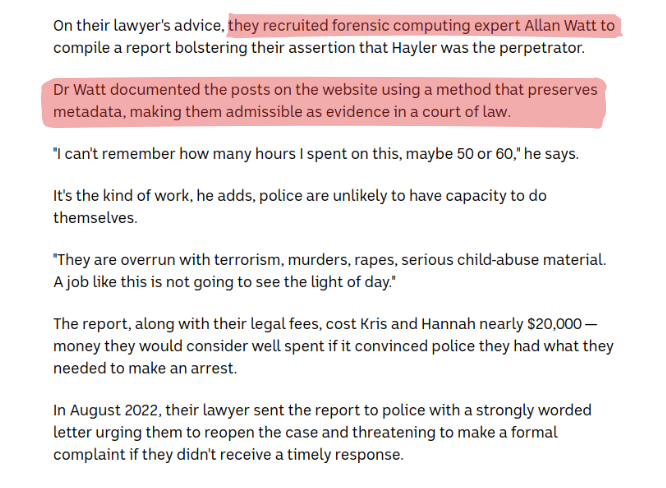
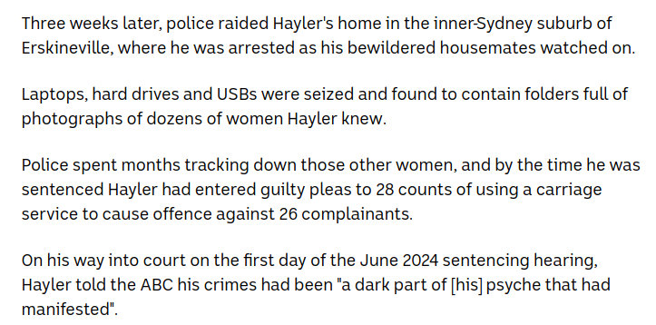

<!-- .slide: class="content" --> ## Is Digital Forensics Dead? * Constant tension between User Privacy vs. Digital Forensics! * Much of the time DF undermines device security. * Device manufacturers now focus on security and privacy as a first class feature. * For example: * Full disk encryption * Incognito browsers * VPN and TLS everywhere! --- <!-- .slide: class="full_screen_diagram" --> https://www.abc.net.au/news/2024-10-14/hannah-grundy-reveals-the-ultimate-betrayal-after-photos/104404784 <a href="https://www.abc.net.au/news/2024-10-14/hannah-grundy-reveals-the-ultimate-betrayal-after-photos/104404784"> </a> --- <!-- .slide: class="full_screen_diagram" --> <a href="https://www.abc.net.au/news/2024-10-14/hannah-grundy-reveals-the-ultimate-betrayal-after-photos/104404784">  </a> --- <!-- .slide: class="content" --> ## Triage is useful! * Digital Forensics is about capturing the best available evidence * As long as general principals are followed it is useful! * What is appropriate for this evidence?  --- <!-- .slide: class="content" --> ## Wider application of Digital Forensics * Digital Forensics started off as a Law Enforcement tool. * Valuable tool to "determine what happened" * Incident Response is a more modern application of DF techniques * Initially DF was used hoping for prosecution * Preserving evidence to evidentiary standards * Shipping drives via FedEx! * Thorough analysis and reporting by DFIR experts --- <!-- .slide: class="content" --> ## Priority of DFIR * As adversaries became more professional they became more efficient * Financially motivated! Can cause a lot of damage * Time to dwell is measured in days and hours * No time to take full disk images! * We need to rely more on triage! * Faster turn around - we need answers quickly! * Main goal is disruption and eviction of attackers.